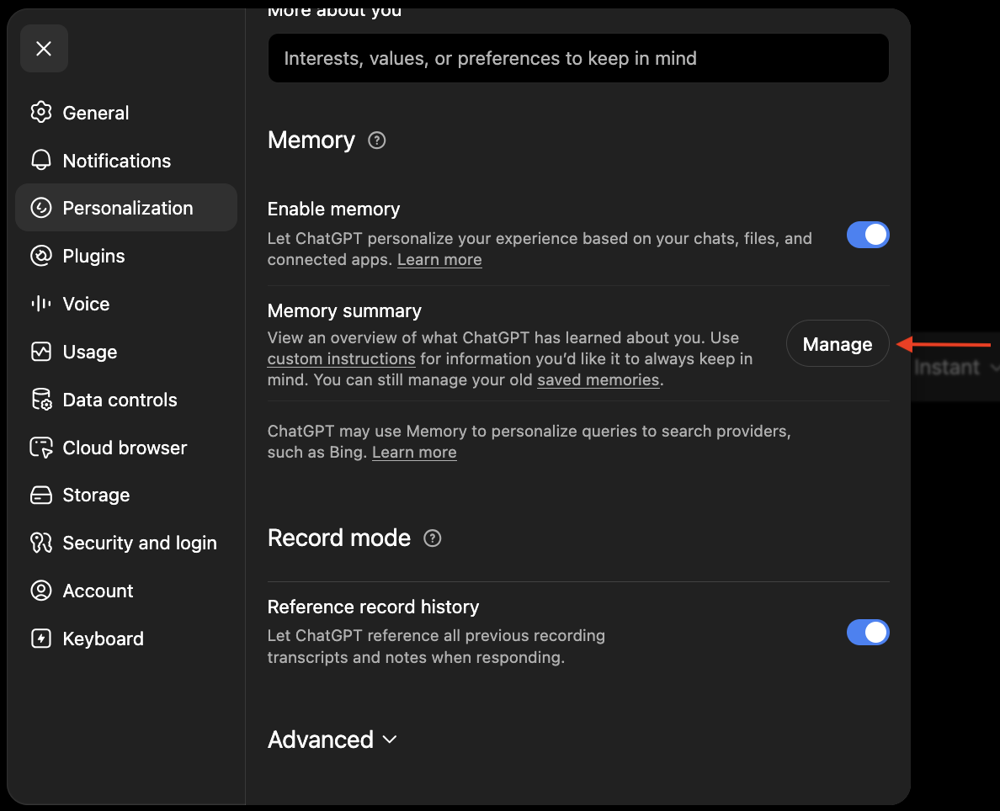
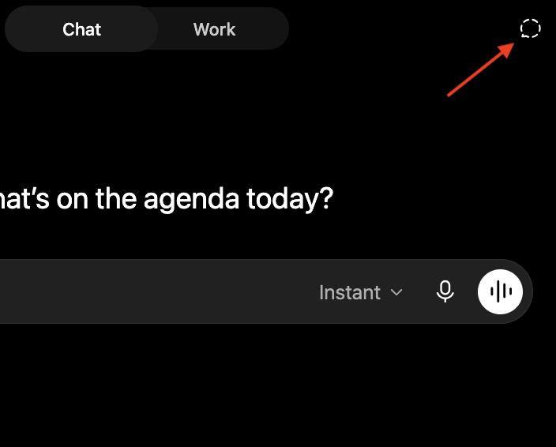

Memory
ChatGPT has "memory" and remembers details about you — who you are, what you're working on, and how you like things done — so you don't always have to re-explain yourself in every new chat.
Early on, ChatGPT may not always work the way you expect. It will make annoying assumptions or may choose the wrong approach to a problem, requiring you to correct it. Over time, it compiles memories, helping reduce these friction points by learning your preferences and recurring context, making future interactions faster, more accurate, and better aligned with how you work.
Managing your memory
As you chat, ChatGPT updates memory automatically, saving details it considers important.
If you'd like to make sure ChatGPT remembers something, you can always tell ChatGPT, "Save this to your memory."
Alternatively, you can manage what's in ChatGPT's memory bank directly by navigating to the Personalization page in Settings.

Temporary Chat
Sometimes you may want to chat about something, but don't want details from this chat to be saved to memory. Or maybe you want a fresh, less biased opinion. ChatGPT offers a feature for this: Temporary Chat.

Start a temporary chat using the button in the top right.
ChatGPT does not store any long-term memories from temporary chats. It also has no access to your existing memory, so each temporary chat starts from a clean slate.